Dividiamo la frase in due componenti:
Con i predicati unari P e Q esprimiamo che:
Per ogni si scrive ∀ e consideriamo x il generico cane
Abbiamo così una formula che ci dice come ogni singolo cane esistente segua questa nostra regola, cioè che se corre allora salterà.
Questa frase non è sembra rispecchiare la realtà, proviamo quindi a negarla.
Il modo di negare questa affermazione, cioè dire che non è vero che tutti i cani che corrono abbaiano, è abbastanza semplice, basta trovare un singolo cane che non segua questa regola. Ossia: Esiste un cane che non C(x) → S(x).
Ecco qui la nostra prova che esiste almeno un cane che non rispetti la regola stabilita in precedenza. Abbiamo quindi trovato la negazione della formula precedente.
Purtroppo il linguaggio logico matematico non è facilmente traducibile in italiano, in questo specifico caso il problema sono la negazione e le parentesi, semplifichiamo quindi la formula in un formato più semplice da tradurre.
Si ricordano le seguenti equivalenze:
Reinserendo il quantificatore universale:
Otteniamo quindi "Esiste un cane che corre e non salta", questa frase è completamente equivalente alla formula precedente.
| C(x) | S(x) | ¬(C(x) → S(x)) | C(x) ∧ ¬S(x) |
|---|---|---|---|
| F | F | F | F |
| T | F | T | T |
| F | T | F | F |
| T | T | F | F |
Si è visto quindi anche tramite le tabelle di verità che le due formule siano effettivamente equivalenti.
Insiemi validi per "Ogni persona che corre salta":
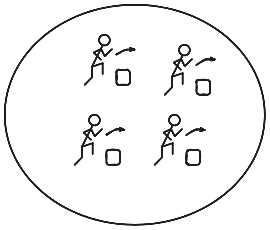
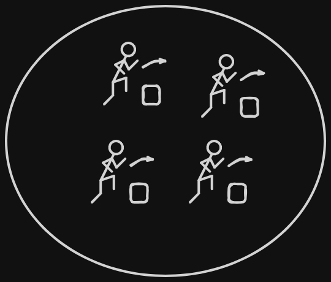
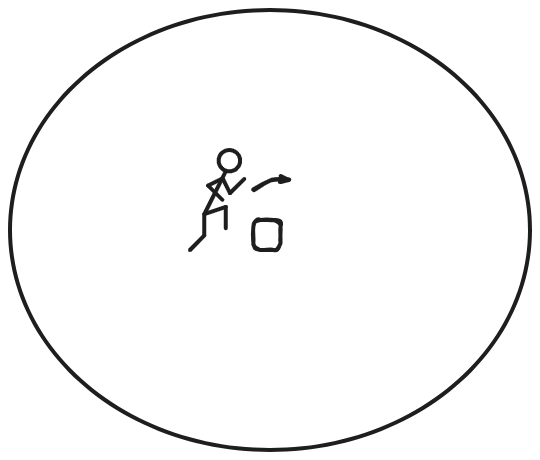
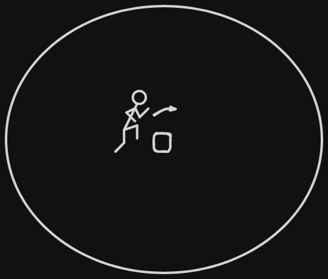
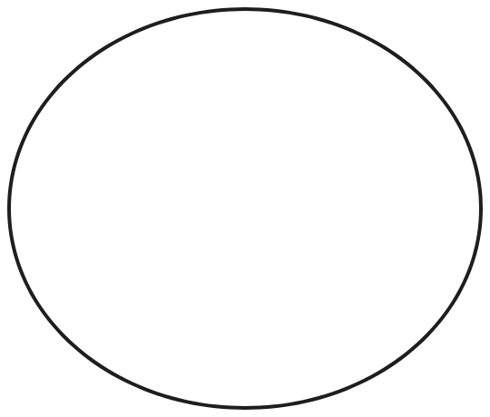
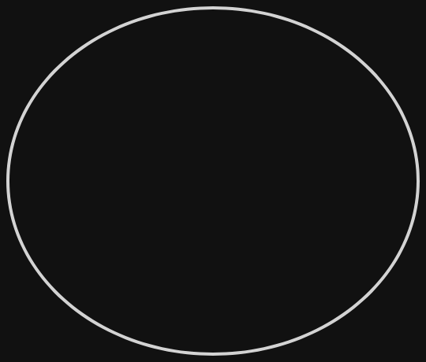
Come detto in precedenza, per negare questa affermazione basta che ci sia almeno una persona che non stia correndo e saltando
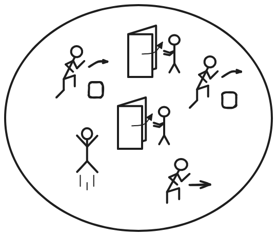
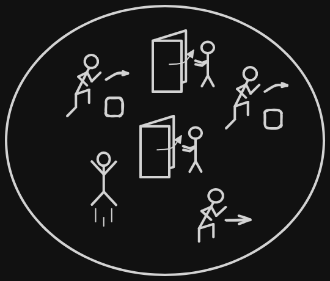
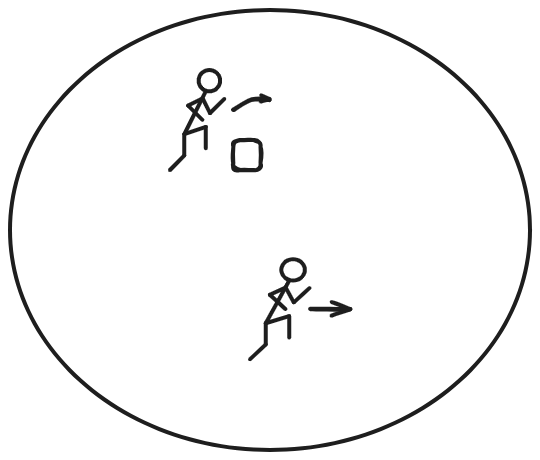
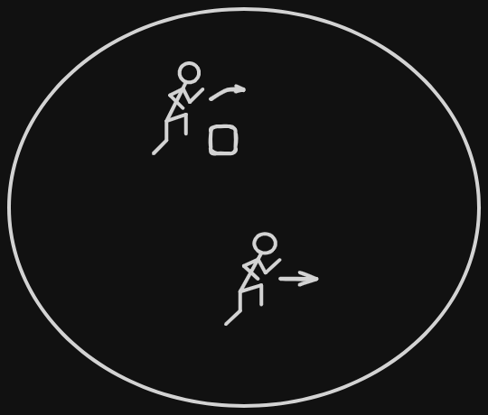
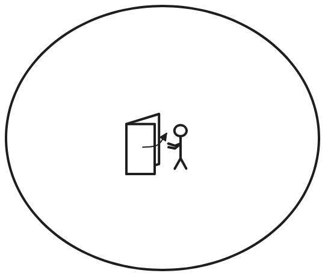
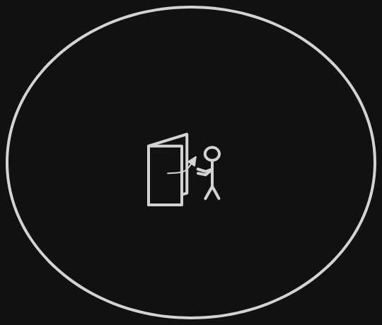